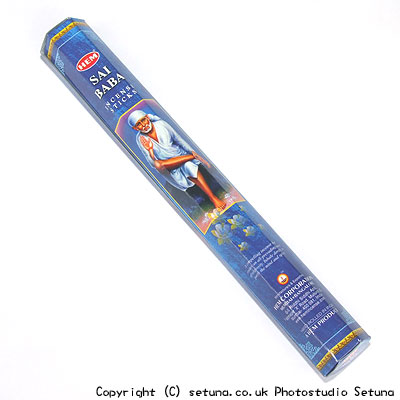

そのまま嗅ぐと思いっきり「洗剤?」みたいな鼻を刺すような匂いの中に甘く華やかな香水のような線が一本、通っているという感じのお香です。
洗剤みたいなのが恐らく安息香、刺す感じが乳香、華やかなのが没薬といった所だと思います。
昔からある三つの有名な香料の合体作品といったところですね。
火を点けてもそのまま嗅いだ時とあまり変わりのない香りです。
他の香料も含まれてているかもしれませんがこの三つの香りが強くて感じ取る事は出来ません。
大人しい感じの香りのハーモニーは、どれが突出するわけでもなく、部屋の中層辺りを「ひっそり」という感じで漂い始めます。
時間が経つにつれて香りは宙をゆったりと満たしていき甘い没薬の香りだけが上層へと届き広がり始めます。
焚き終わった後は甘い香りだけが長めに残ります。
焚いている時は多少薬臭さを感じますので、焚いている最中より焚き終わった後のほうが良い匂いだと思いますね。
扱いの難しいお香の仲間に属します。
